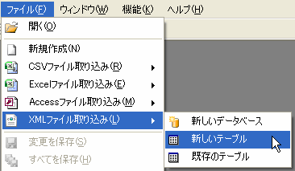
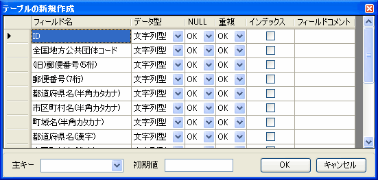

新しいテーブルに取り込む
XMLファイル内のデータを新しいテーブルを作成し、そこに取り込みます。
1.XMLファイルの選択
XMLファイルを新しいテーブルに取り込むには取り込み先のDBファイルを開いた状態で、メインメニューのファイル→XMLファイル取り込み→新しいテーブルをクリックします。
その後、取り込みたいXMLファイルを選択します。すると｢取り込むテーブルの選択｣ダイアログが表示されます。
2.取り込むテーブルの選択

取り込むテーブルを選択して「OK」ボタンをクリックしてください。
3.テーブルの新規作成
最後にテーブルの新規作成ウィンドウがXMLファイルのフィールドを元に表示されるのでフィールド定義を設定し、｢OK｣ボタンをクリックします。
するとXMLデータの取り込みが開始され、新規テーブルが作成されます。